MONIMENTS
Le colisée
Le Colisée romain est sans doute le monument le plus emblématique de la capitale italienne. Construit entre 72 et 80 après J.-C., il était le symbole de la puissance de l’Empire romain. Cet immense amphithéâtre accueillait des gladiateurs, des spectacles et des rassemblements devant plus de 50 000 spectateurs. Réservez vos billets à l’avance pour éviter les foules
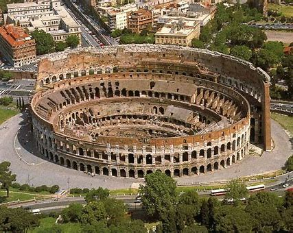
La Basilique Saint-Pierre
Siège du catholicisme, la basilique Saint-Pierre est un monument religieux majeur. Son dôme emblématique domine le Vatican et offre une vue panoramique sur la ville.

La Chapelle Sixtine
Connue pour ses fresques magnifiques, dont le célèbre plafond peint par Michel-Ange, la Chapelle Sixtine est située au cœur des Musées du Vatican.
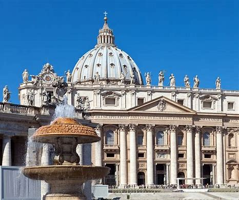
Le Forum Romain
Plongez dans l’histoire en visitant les ruines du Forum Romain, centre politique et social de l’ancienne Rome.
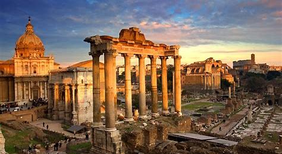
Le Panthéon
Ce monument bien conservé est un chef-d’œuvre architectural avec son dôme impressionnant et son oculus ouvert vers le ciel.
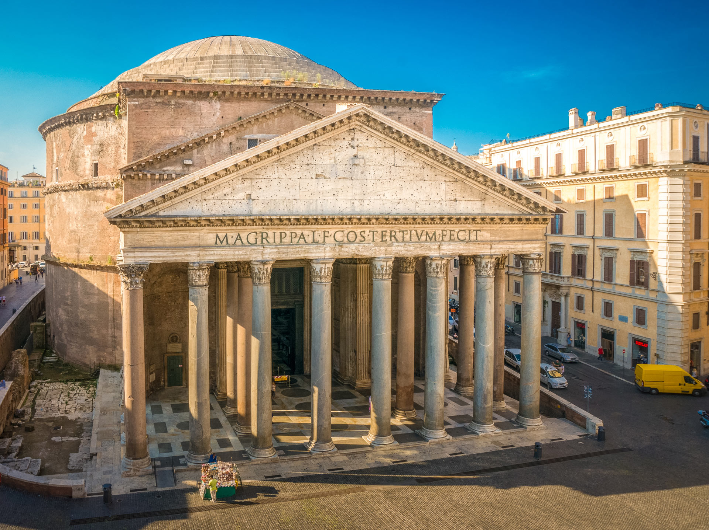
La fontaine de Trevi
Jetez une pièce dans cette fontaine légendaire pour vous assurer de revenir à Rome un jour. Elle est la plus célèbre fontaine du monde.
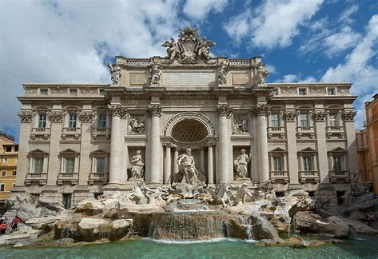
Le chateau Saint-Ange
Ancien mausolée de l’empereur Hadrien, le Château Saint-Ange offre une vue panoramique sur la ville depuis sa terrasse.
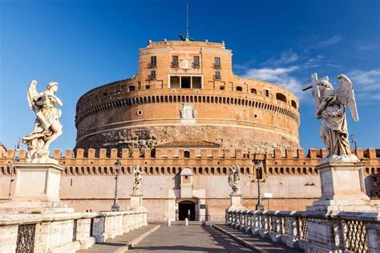
Le Monument Vittorio Emanuele II
Situé sur la Piazza Venezia, ce monument dédié au premier roi d’Italie est impressionnant avec ses colonnes et sa statue équestre.
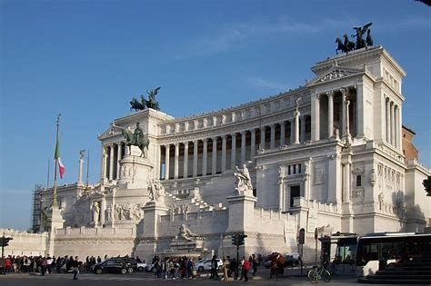
Les Fontaines de la Piazza Novona
La Piazza Navona abrite trois fontaines, dont la Fontaine des Quatre Fleuves, conçue par Gian Lorenzo Bernini.
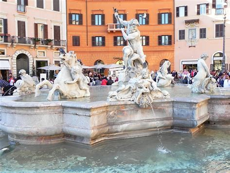
La gastronomie romaine
La gastronomie romaine est le reflet de son riche passé, mêlant des influences étrusques, méditerranéennes et même du Moyen-Orient. Chaque plat raconte une histoire, chaque saveur évoque un souvenir. Dans cette ville, manger n’est pas seulement une nécessité, c’est une célébration. Une célébration de la vie, de la famille et, bien sûr, de la nourriture. À Rome, la table est un lieu de rassemblement, de partage et de passion. Les Romains prennent un plaisir immense à déguster des plats préparés avec amour, à partir d’ingrédients frais et locaux. La gastronomie n’est pas seulement une partie de la culture romaine, elle en est le cœur battant. Alors, préparez-vous à embarquer pour un voyage culinaire à travers les rues de Rome, où chaque bouchée est une découverte et chaque repas un souvenir impérissable.
Voici quelques plats incontournables à déguster lors de votre séjour à Rome :
Les incontournables recettes de pâtes romaines:
Les délices végétariens:
Les viandes et abats:
Les en-cas et street food:
Les délices sucrés:
Les boissons:
Retour
HOTEL
Voici quelques hôtels populaires à Rome pour les touristes, ainsi que leurs tarifs :
-
Hotel Milton Roma
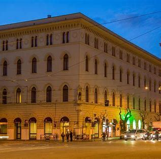
Tarif : À partir de 180,24 € par nuit
-
The Hive Hotel Roma
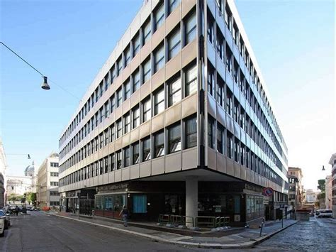
Tarif : À partir de 182,20 € par nuit
-
La Griffe Hotel Roma
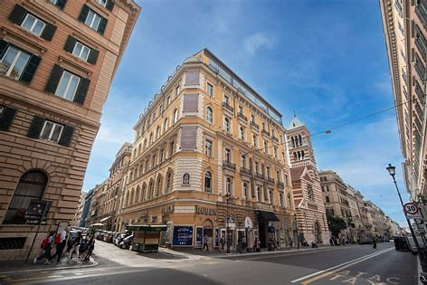
Tarif : À partir de 233,75 € par nuit.
-
Hotel Giolli Nazionale
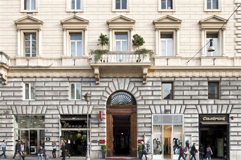
Tarif : À partir de 157,65 € par nuit
Retour
TRANSPORT
Train de banlieue à Rome
Retour